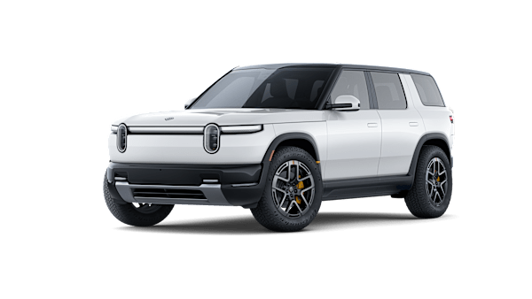

R2 发布引发强烈市场反响：14 天内 Reddit 社区产生 6,426 条评论，情感分布 85.8% 中性、10.6% 正面、3.6% 负面。消费者对产品本身高度认可，但购买决策存在明显障碍。
1. LiDAR 版本观望（影响 40% 犹豫用户）
消费者将 2027 年 Gen 3 + LiDAR 版本作为心理锚点，导致 2026 年 Launch Edition 相对贬值。Tesla HW3 车主的「被抛弃」经历正在放大这种恐惧——多位用户明确表示「不想重蹈覆辙」。
→ 行动：发布 Gen 2.5 vs Gen 3 详细功能对比表，明确哪些功能 OTA 可升级、哪些硬件受限；探索首批车主硬件升级优惠路径。
2. Launch Edition 配置限制（89 赞高赞吐槽）
黑色内饰强制引发南方市场强烈反弹。Arizona 用户称「black interior is a death wish」，Texas 用户形容「like sitting in an air conditioned car with a parabolic heater aimed at your head」。这不是审美偏好，是气候刚需。
→ 行动：立即开放 Launch Edition 浅色内饰选配，即使推迟交付 1-2 个月也值得。R1 数据显示浅色内饰占比 >40%。
3. 首批车质量顾虑（150+ 条「等别人当 beta tester」）
R1 早期问题的「集体记忆」正在传导至 R2 购买决策。消费者心态是「让其他人先踩坑」，这直接威胁 Launch Edition 的转化率和现金流。
→ 行动：Launch Edition 提供 5 年 / 100K 英里延长保修；设立首批车主专属支持热线（48 小时响应）。
430 次 Tesla 提及中，52 条明确表达「要换到 R2」的转化意向。
转化驱动力排序：
→ 行动：推出 Tesla Trade-In 专属优惠 $2,000；在 Supercharger 站点设置移动展厅；制作「Why Rivian」系列内容，强调品牌价值观差异。
数据来源：6,426 条 Reddit 评论主题分类 | 另有 40.2% 归类为「一般讨论」
| 风险点 | 讨论量 | 情感强度 | 传播潜力 | 优先级 |
|---|---|---|---|---|
| e-Latch 电子门锁安全 | 200+ 条 | 高 | 极高 | P0 |
| LiDAR 版本观望 | 305 条 | 中 | 高 | P0 |
| 首批车质量顾虑 | 150+ 条 | 中 | 中-高 | P1 |
| 黑色内饰限制 | 89 赞吐槽 | 高 | 中 | P1 |
| 服务网络担忧 | 300+ 条 | 低 | 低 | P2 |
"I am fully on board with these electronic doors as long as there's an easy way to manually open them. I don't want to dig around in the innards of a door, looking for a pull tab."— Reddit 用户, 142 赞
"Volvo has mechanical door handles AND electronic child safety locks. They're not mutually exclusive. Rivian using child locks as the 'reason' for this decision is disingenuous."— Reddit 用户, 26 赞
严重性：极高 — 涉及人身安全，一旦发生致死事故，将造成不可逆的品牌伤害。Tesla 已有 e-latch 致死案例在先，公众敏感度极高。
建议立即行动：发布紧急脱困视频教程、邀请第三方安全机构测试、交付时强制演示后排脱困操作。
"I'm so torn and cannot decide on whether to get the launch edition with autonomy+ or wait for lidar one. Have you heard anything that could help me decide."— Reddit 用户, 63 赞
"I'm personally gonna wait for the lidar version for future proofing, because I don't wanna be in the same situation I'm currently in with a hw3 tesla."— Reddit 用户, 83 赞
锚定效应：消费者将 2027 年 LiDAR 版本作为心理锚点，导致 2026 年 Launch Edition 相对贬值。
Tesla HW3 阴影：多位 Tesla 车主明确表示担心「重蹈被抛弃覆辙」，这成为等待 LiDAR 的核心心理障碍。
建议：重新框架 Launch Edition 为「早享版」而非「阉割版」，发布清晰的 Gen 2.5 vs Gen 3 功能对比表。
| 竞品 | 提及次数 | 占比 | 转化意向 |
|---|---|---|---|
| Tesla / Model Y | 430 | 62.6% | 52 条明确意向 |
| Hyundai / Ioniq | 108 | 15.7% | — |
| Ford / Mach-E | 73 | 10.6% | — |
| Kia / EV6 / EV9 | 45 | 6.5% | — |
| 其他 | 31 | 4.5% | — |
"Can't wait to trade my Tesla."— Reddit 用户, 54 赞
"As a 2018 Model 3 w/ FSD owner, if you like the car just get it. 8 years later Tesla has still not delivered on L4 and I am trading it in for the R2."— Reddit 用户, 13 赞
"I loved when Tesla was the underdog but Elmo is driving it into the ground."— Reddit 用户, 6 赞
品牌价值观冲突是第一驱动力：对 Elon Musk 的负面情绪正在蔓延到 Tesla 品牌本身。
FSD 空头承诺疲劳：8 年未兑现的 L4 承诺让 Tesla 车主对「未来功能」持怀疑态度，反而更看重 Rivian「现在能用的功能」。
RJ 人设加分：「喜欢产品也喜欢这个人」是情感转化的基础（101 赞评论提及 CEO 人格魅力）。
"I don't get it either. Yes, it's expensive, but look around, all cars are expensive. Compared to other cars at that price point it's a pretty stellar value proposition. I assumed the Launch Edition was going to be low to mid 60s."— Reddit 用户, 52 赞
"I love that they included the required charges in their advertised prices. I wish all companies nationwide were required to post the actual prices."— Reddit 用户, 87 赞
「All-in 价格」是差异化优势：消费者高度认可 Rivian 的透明定价，与传统车企的「加价文化」形成鲜明对比。
$45K 锚点是双刃剑：被广泛宣传的基础价格成为心理锚点，但实际要等到 2027 年底才能交付，造成「被迫升级」的落差感。
建议：营销话术以「$48,490 起」领先（针对 2026 可交付车型），减少预期落差。
| 区域 | 关键信号 | 市场预判 |
|---|---|---|
| California | 「Would be so cool if this outsells the Y in California」、广告中的「California sunshine」引发共鸣 | 核心战场 — Rivian 总部所在地，Tesla 大本营，品牌认知度高，预计 Top 1 销售州 |
| Arizona / Texas / Florida | 「In Arizona black interior is a death wish」、「In South Texas is like sitting in an air conditioned car with a parabolic heater aimed at your head」 | 高风险 — 黑色内饰限制直接导致订单流失，需优先开放浅色选配 |
| Colorado | 「I park my R1S outside in the snow in Colorado overnight... wakes right up」 | 高潜力 — 户外文化契合「Adventure」定位，R1 口碑正向传导 |
| Georgia | 工厂建设进展关注度高（「Vertical construction should get underway in Georgia」） | 潜力市场 — 工厂落地带来本地品牌认知，2027 年后爆发 |
Tier 1（核心市场）：California、Washington、Oregon — Tesla 大本营 + 环保意识 + 高收入
Tier 2（增长市场）：Colorado、Utah — 户外文化契合，R1 口碑支撑
Tier 3（待激活）：Arizona、Texas、Florida — 需求存在但黑色内饰是障碍，解除限制后可快速提升
注：以上为基于定性信号的推测，建议结合实际预订数据验证。
| 优先级 | 问题 | 具体行动 | 负责人 | 预期影响 |
|---|---|---|---|---|
| P0 | LiDAR 观望 | 发布 Gen 2.5 vs Gen 3 功能对比表；承诺硬件升级路径或置换优惠 | 产品/市场 | 消除 40% 犹豫用户的最大障碍 |
| P0 | e-Latch 安全 | 48 小时内发布多角度紧急脱困视频；邀请第三方安全机构测试 | 公关/产品 | 阻断负面话题发酵，预防公关危机 |
| P0 | Tesla 车主转化 | 推出 Tesla Trade-In 专属优惠 $2,000；Supercharger 站点设置移动展厅 | 销售/市场 | 捕获 52+ 条明确意向，扩大品牌转换 |
| P1 | 黑色内饰限制 | 开放 Launch Edition 浅色内饰选配（即使推迟交付 1-2 个月） | 产品 | 减少 Arizona/Texas/Florida 南方市场流失 |
| P1 | 首批车质量顾虑 | Launch Edition 提供 5 年 / 100K 英里延长保修；首批车主专属支持热线 | 售后 | 降低「等别人当 beta tester」的观望心理 |
| P1 | RJ 品牌资产 | 强化 CEO 人格化营销；与 Elon 的对比是「人情味 vs 争议」 | 市场 | 情感差异化，强化品牌认同 |
| 维度 | 数值 | 说明 |
|---|---|---|
| 数据来源 | Reddit r/Rivian | 公开社区讨论 |
| 时间范围 | 2026年3月12-26日 | R2 发布后 14 天 |
| 帖子数 | 188 | R2 相关主题帖 |
| 评论数 | 6,426 | 完整评论采集（无截断） |
| 高价值引用 | 773 | 筛选标准：赞数 ≥5 且评论长度 ≥50 字符，代表有实质内容且获社区认可 |
| 50+ 赞评论 | 85 | 代表社区共识 |
| 分析方法 | 多专家并行分析 | 消费者心理学 + 竞争情报 + 产品战略 + 风险预警 |
局限性：数据仅来自 Reddit 单一平台，以「发烧友」为主，可能不代表大众市场。建议结合 YouTube、Instagram、预定数据进行交叉验证。